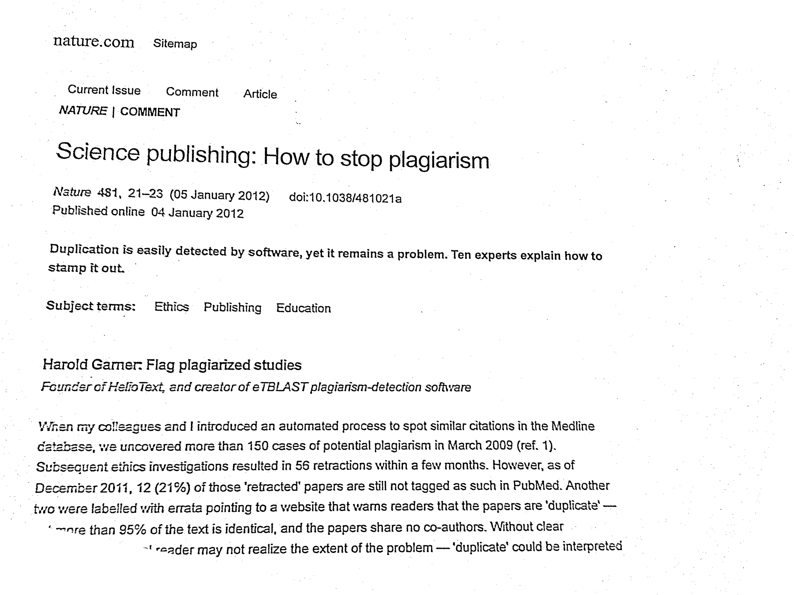
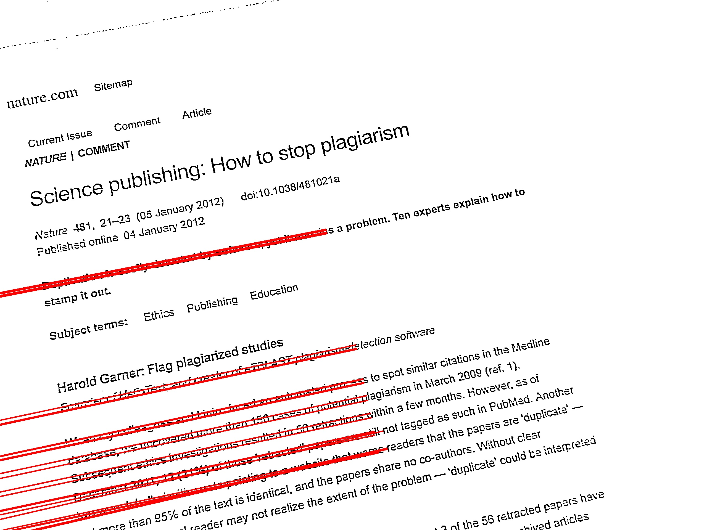
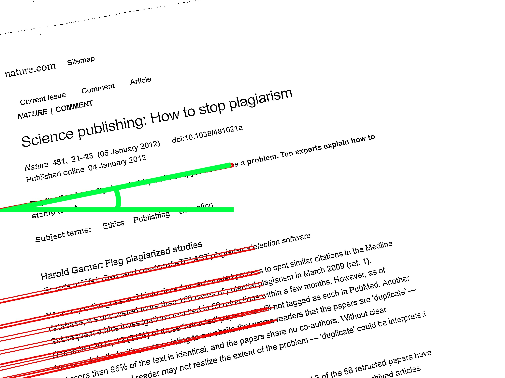

Last year, I built a simple app to let people search a database of articles.
But typing anything on a phone just sucks
So I added a feature to let you search based on a photo

You snap a picture, the app uploads the image to a server that performs OCR, executes the search and returns results
I used Tesseract, an OCR engine developed at HP and then Google.
It seems to be one of the most accurate open source OCR packages around, with many different language models.
It worked, mostly. But images coming from a camera phone are:
- • unevenly lit
- • not properly aligned (rotated)
- • noisy
Python and OpenCV to the rescue!

Adaptive thresholding can help fix lighting issues:
def threshhold(img):
bwdst = cv.CreateImage( cv.GetSize(img), cv.IPL_DEPTH_8U, 1)
cv.CvtColor(img, bwdst, cv.CV_BGR2GRAY)
cv.AdaptiveThreshold(bwdst, bwdst, 255.0, cv.CV_THRESH_BINARY,
cv.CV_ADAPTIVE_THRESH_MEAN_C,11)
cv.Dilate(bwdst,bwdst)
cv.Erode(bwdst,bwdst)
return bwdst
image credit: Mind Hacks
Clean up noisy images using
- • edge preserving median blur (low pass filter)
- • dilation and erosion (the morphological operators)
- • up and down resampling (Gaussian pyramid decomposition)

The hough transform finds lines in any image
Before applying the Hough transform, it helps if we apply a edge detector, aka a high pass filter
def findLines(src):
dst = cv.CreateImage(cv.GetSize(src), 8, 1)
color_dst = cv.CreateImage(cv.GetSize(src), 8, 3)
storage = cv.CreateMemStorage(0)
cv.Canny(src, dst, 50, 200, 3)
cv.CvtColor(dst, color_dst, cv.CV_GRAY2BGR)
return cv.HoughLines2(dst, storage, cv.CV_HOUGH_STANDARD, 1, pi / 180, 100, 0, 0)
On the relation between blurring and edge detection:
- • blur = low pass filter, like a moving average
- • edge detection = high pass filter, accentuating the pixel difference
- • accessible example of digital signal processing! I want more!
Once we know what the lines look like, we can calculate the degree of rotation

OpenCV will build a rotation matrix for us, given a point around which to rotate, and the angle
def rotate(img, angle):
center = (img.width/2.0, img.height/2.0)
rot_mat = cv.CreateMat(2, 3, cv.CV_32FC1)
cv.GetRotationMatrix2D(center, angle, 1.0,rot_mat)
dst = cv.CreateImage( cv.GetSize(img), cv.IPL_DEPTH_8U, 1)
cv.WarpAffine(img, dst, rot_mat, fillval=255)
return dst
This is just a taste of what OpenCV can do
- • face detection
- • 3d vision (inferring 3d coordinates from stereo images)
- • realtime object tracking
You can find source code, and this presentation at my github:
questions/comments: